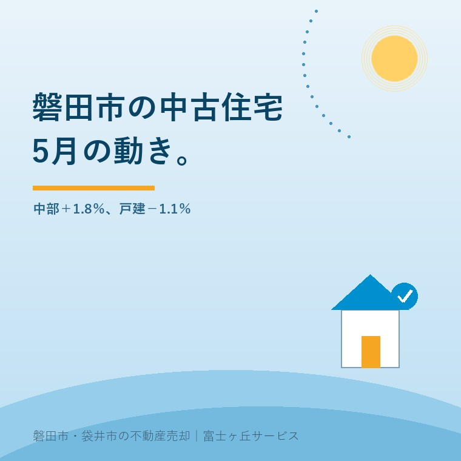

2026年9月1日｜カテゴリ：磐田市／中古住宅／売却

この記事の要点
Q. 中部の中古住宅が1.8％増えたそうです。磐田市の家も、今なら高く売れますか。
A. 1.8％増は売値ではなく、中部5県の販売量指数の前月比です。2026年5月は合計が1.8％増える一方、戸建住宅は1.1％減りました。磐田市の中古戸建の価格や件数を直接示す数字ではないため、近隣成約と物件条件で査定する必要があります。
磐田市・袋井市・森町では、富士ヶ丘サービスのような地域密着の不動産会社に相談するという選択肢があります。
不動産の統計で「1.8％増」と見れば、値段が上がったように読めます。売却を考える持ち主の方なら、2026年9月に売り出す理由にしたくなる数字です。
しかし、国土交通省が2026年8月31日に公表したのは「既存住宅販売量指数」です。価格の統計ではありません。この記事は同省の2026年5月分の確報値を、磐田市の中古住宅売却で使える範囲に絞って説明します。
国土交通省の既存住宅販売量指数では、2026年5月の中部地方の合計指数は137.1で、2026年4月から1.8％増えました。一方、戸建住宅は137.8で、1.1％減りました。
| 2026年5月・中部地方 | 指数 | 前月比 |
|---|---|---|
| 合計 | 137.1 | ＋1.8％ |
| 戸建住宅 | 137.8 | −1.1％ |
| マンション | 135.5 | ＋6.6％ |
| 30㎡未満を除く合計 | 130.8 | ＋0.6％ |
| 30㎡未満を除くマンション | 116.8 | ＋3.6％ |
国土交通省「既存住宅販売量指数 令和8年5月分」。2010年平均＝100、季節調整値・確報値。2026年9月1日確認。
合計が増え、戸建が減るのは矛盾ではありません。マンションが6.6％増え、合計を押し上げたからです。床面積30㎡未満を除くと、合計の増加は0.6％まで小さくなります。
「中部の中古住宅は1.8％増」と一行にすると、戸建の減少も、小規模なマンションを含む影響も消えます。磐田市で戸建を売る方が見るべき行は、少なくとも合計ではなく戸建です。
既存住宅販売量指数は、2010年の平均を100として、登記データを基に既存住宅の取引量を指数化したものです。137.1は販売量の水準を示し、価格の上昇率ではありません。
対象は、個人が取得した住宅の所有権移転登記量から、既存住宅取引ではないものを除いて加工したデータです。売買契約の日ではなく、登記を基にします。そのため、2026年5月に売り出した物件や契約した物件だけを数える統計でもありません。
中部地方は長野県、静岡県、岐阜県、愛知県、三重県の5県です。静岡県単独でも磐田市単独でもなく、別荘、セカンドハウス、投資用物件なども含みます。
不動産の数字は、範囲が広くなるほど立派に見え、個別査定には使いにくくなります。中部5県の137.1を、磐田市見付の築30年の戸建へそのまま掛ける。そんな査定はできません。
既存住宅販売量指数の良い点は、登記という全国共通の資料を使い、戸建とマンションを分け、季節調整までしたことです。仲介会社の感触だけでは見えない広域の地合いを、同じ物差しで追えます。
試験運用ながら、30㎡未満のマンションを含む値と除く値が並ぶのも良い。投資用の小規模住戸が全体を動かす影響を、売主が見分けられます。
その上で注文したいのは、市区町村単位まで下りないことです。中部5県には名古屋市のマンションも、長野県の別荘も、磐田市の旧集落の戸建も入ります。地域密着の査定で使うには粒が粗い。
公表は2026年8月31日で、対象は同年5月です。約3か月の差もあります。広域の流れを振り返る資料としては使えても、2026年9月の買主の反応を即日示す数字ではありません。
磐田市の中古住宅は、駅徒歩圏、郊外住宅地、旧集落・農村部で買主と価格の付き方が違います。中部地方の戸建指数より、この三つのどこに入るかのほうが売却実務に効きます。
磐田駅や御厨駅への距離、土地の形、建替えやすさが見られます。建物が古くても土地として検討されるため、解体前に古家付きと更地の両方で査定します。
駐車台数、学校や買物への動線、耐震性、修繕履歴が比較されます。中古戸建として住める印象が、内覧と価格交渉を左右します。
接道、農地、敷地の広さ、境界、未登記建物が先に問われます。建物の見栄えより、売買できる範囲を確定する作業に時間がかかります。
地域差の詳しい見方は磐田・袋井、エリアで違う「売れる家」にまとめています。
中部地方の戸建指数が前月比1.1％下がったからといって、売出価格を1.1％下げる必要はありません。1,500万円の家を16万5,000円下げる計算には、根拠がありません。
売主が見る数字は、近い生活圏で条件が似た成約事例、現在の競合物件、問い合わせ件数、保有費、修繕費です。査定額が会社ごとに違う理由と成約事例の見方は査定額のカラクリで説明しています。
路線価や公示地価も、販売量指数とは別の物差しです。税の評価、地価の基準、実際の売値を混ぜると、希望価格だけが先に膨らみます。違いは路線価が上がっても実家の売値は上がらない理由で確認できます。
私は、2026年5月の中部戸建−1.1％を見て、「磐田の売り時を逃した」とは考えません。逆に、合計＋1.8％を見て「値上げできる」とも言いません。この統計はアクセルでもブレーキでもなく、広域の道路標識です。
正直に言えば、月次指数をどこまで査定説明へ入れるかは迷います。数字を増やすほど説明が精密に見える一方、持ち主の方が一番知りたいのは「この家はいくらで、何か月で売れそうか」だからです。私は、指数より先に比較事例と物件の弱点を出します。
磐田市の中古住宅を売り出す時期は、1か月の指数より、売買契約へ進める準備が整ったかで決めます。名義や境界が曖昧なまま公開すると、買主が現れてから止まります。
今日できる確認は、査定書に載った成約事例の住所と成約時期を聞くことです。同じ磐田市というだけでなく、生活圏、築年、土地面積、接道が似ているかを見ます。根拠が遠ければ、査定額も遠い数字です。
売るかどうかは、その説明を聞いてから決めれば構いません。売らない場合の年間保有費も同じ表へ置くと、「待つ費用」と「売る費用」を比べられます。
1.8％増は価格上昇ではありません。長野・静岡・岐阜・愛知・三重の5県をまとめた既存住宅販売量指数の前月比です。磐田市単独の成約件数や価格を示さず、同じ月の戸建住宅は1.1％減でした。売出価格は近隣の成約事例、接道、築年、建物状態、境界などを確認して査定してください。
月次指数だけで2026年9月の売出しを決める必要はありません。引渡し希望日から逆算し、名義、境界、残置物、雨漏りや設備不具合、火災保険を先に確認してください。準備が整っている家は時期を選べます。売らない選択も含め、保有費と想定手取りを並べてから媒介契約を決める方法があります。
販売量指数は広域の地合いを確認する補助資料として使います。査定額の直接根拠には、同じ地区や生活圏の成約事例、土地面積、建物面積、築年、改修歴、接道条件などが必要です。中部5県の指数だけで値上げを提案する査定は、根拠が粗すぎます。比較した成約事例と補正理由を不動産会社へ確認してください。

この記事を書いた人：大石浩之（宅地建物取引士）
大石浩之（磐田市／不動産業）。磐田市・袋井市・森町で、売主とご家族が困らない中古住宅・実家の売却を一件ずつ支援しています。査定額を出す前に道路・境界・名義を確認します。プロフィール
磐田市・袋井市・森町の中古住宅・実家売却相談
高い数字より、売り切る根拠を出す
成約事例、道路、境界、名義、建物状態から、売出価格と想定手取りを宅地建物取引士が整理します。
本記事は2026年9月1日時点の国土交通省公表資料に基づく一般的な説明です。既存住宅販売量指数は中部5県をまとめた販売量の指数で、磐田市の価格、成約件数、売却期間を示すものではありません。査定額や売却条件は物件ごとに変わります。登記は司法書士、境界は土地家屋調査士、建物状態は建築士・設備業者、税務は税理士などの専門家に確認をお願いします。
富士ヶ丘サービス株式会社／静岡県磐田市見付5789番地1／TEL:0538-31-3308／静岡県知事 (2) 第14083号／代表取締役・宅地建物取引士 大石 浩之